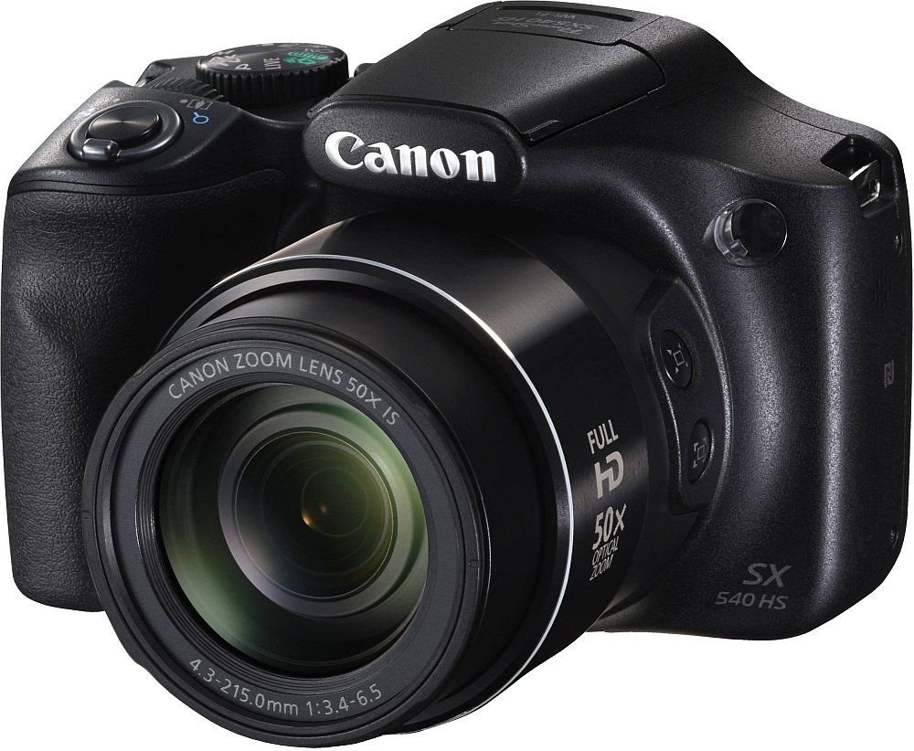
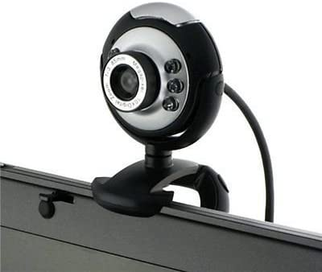
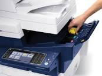
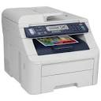

COMPUTER HARDWARE
You learned earlier that a computer has electronic and mechanical
parts known as hardware.
Hardware also includes input
devices, output devices, system unit, storage devices and
communication devices. Without these components we would not be
able to use the computer.
Input Devices
An input device is any hardware component that allows you the user
to enter data into the computer.
There are many input
devices. Six of the most widely used input devices are:
Keyboard
A computer keyboard is one of the primary input devices used with a
computer. Similar to an electric typewriter, a keyboard is composed
of buttons that create letters, numbers, and symbols, as well as
perform other functions. The following sections provide more
in-depth information and answers to some of the more frequently
asked questions about the keyboard.
The following image
shows a 104-key keyboard with arrows pointing to each section,
including the control keys, function keys, LED indicators, wrist
pad, arrow keys, and keypad.
Types of keyboards
Today, most keyboards are similar to each other, but may be missing
one or more of the sections mentioned earlier (e.g., the keypad).
Where keyboards begin to differ the most is with their
constructions. Some keyboards are mechanical, while others use
membrane keys. Some keyboards are split down the middle and others
even fold in half or roll up. While most keyboards use
the QWERTYlayout, there are still people who use the DVORAK layout.
Laptop keyboards
A laptop keyboard is arranged differently than
a desktop keyboard to accommodate the laptop's narrower footprint.
Most laptop keyboards are made smaller by placing the keys closer
and by including an Fn key. The Fn key is used in conjunction with
other keys to perform special functions. For example, pressing the
Fn key and the up or down arrow on the keyboard shown below,
increases and decreases the screen brightness. Furthermore, many
laptop keyboards omit the numeric keypad to save space.
Smartphone and tablet keyboards
Today's smartphones and tablets do not come with a physical
keyboard, although it may be purchased as an
optional peripheral add-on. These devices utilize a thumb
keyboard or on-screen keyboard to type messages and enter text into
various fields. The image is an example of the
Apple iPhoneon-screen keyboard, used on all Apple touch-based
devices.
Multimedia Keyboard
The keyboard that has all multimedia buttons is called multimedia
keyboard. The buttons include play, pause, previous, next, volume
up, volume down, mute and special button to launch media. Also, a
button to launch a browser, my computer, calculator is available.
Mechanical Keyboard
The primitive keyboard which uses physical buttons for each key is
called a mechanical keyboard. It makes noise when each key is
pressed. A button is pushed down and an electrical signal is sent
to the computer device which then shows the characters.
Wireless Keyboard
Bluetooth, IR technology or Radio Frequency is used to connect the
keyboard with the computer device. We can port the keyboard and the
parent system is not needed near the keyboard. These keyboards are
lightweight and smaller in size. These keyboards should have a
transmitter and trans-receiver. Transmitter sends the strokes from
the keyboard as radio waves which are received by trans-receiver
kept near parent device.
Virtual Keyboard
The keyboard used in smartphones is called a virtual keyboard. This
keyboard appears when needed and disappears when typing is
completed. This can be automatically set as per need. Also in the
windows system, we can use a virtual keyboard that appears on the
screen. There is no physical object to carry for a virtual
keyboard.
USB Keyboard
Universal Serial Bus Keyboard has a USB stick with a wire which has
to be inserted into the USB port of the system. And then the
keyboard works well. While rebooting the system, the keyboard is
not supported and hence the users may face an issue. Installation
of suitable drivers helps to resolve this issue.
Ergonomic Keyboard
This keyboard is mainly designed for users who use both hands for
typing. The advantage of this keyboard is less muscle strain and
carpal tunnel syndrome for users. The keyboard is built with the
view of ergonomics. This keyboard is expensive and not affordable
for common people.
2. A Mouse
The mouse is a pointing device that has a pointer that changes into
different shapes as you use the mouse. You click the mouse by
pressing and releasing the button. This action allows you to enter
data when using a mouse.
A computer mouse is a hand held
hardware input device that controls a cursor in a GUI (graphical
user interface) and can move and select text, icons, files,
and folders on your computer.
For desktop computers, the
mouse is placed on a flat surface (e.g., mouse pad or desk) in
front of your computer. The picture is an example of a desktop
computer mouse with two buttons and a wheel.
Types of mouse
Wired Mouse
This is your average, run of the mill, basic mouse that connects to
your PC with a USB wire.
Wireless Mouse
A wireless mouse is just the same as its predecessor, but without
its tail.
Ball or Mechanical Mouse
This was one of the first mice seen used with computers. It used a
rubber ball to track motion the ball would spin in the direction
you moved the mouse and the sensor detected it to determine what
way to move the cursor. This mouse is quite out-dated and rarely
seen being used anymore.
Wheel/Scroll Mouse
The wheel mouse can come in all forms; wireless, optical, wired and
more. The wheel refers to the tiny wheel attached between the left
and right click buttons, which allows you to scroll up and down
pages without manually having to use the scroll option on the side
of the page.
Optical Mouse
This is the most commonly seen computer mice these days. It uses an
LED light at the bottom of the device where the old rubber ball in
a mechanical mouse would exist. The LED detects movement through
reflected light. This means the mouse does not work on all
surfaces; clear glass and plastic surfaces are not ideal
Laser Mouse
This works much in the same way as an optical mouse. However, it
does not use an LED; instead it uses a laser beam to reflect light
from the surface it is on. This mouse can be used on surfaces like
glass and plastic, but it is not as accurate as an optical mouse.
BlueTrack Mouse
The BlueTrack mouse was invented by Microsoft; it houses a unique
technology that uses a combination of image sensor and pixel
geometry to accurately detect movement on all types of surfaces.
Touchpad
These are most commonly found on laptops. Also referred to as glide
pads, they have flat surfaces that require the touch of a finger
gliding on them to control the cursor. Though touch pads usually
have two buttons, some are pressure-sensitive and can be used as
buttons by tapping the flat surface.
Trackball Mouse
A trackball mouse looks like an old mechanical mouse inverted. The
ball is featured on the top of the mouse and is used to guide the
cursor by spinning it.
Gaming Mouse
These mice often feature multiple buttons, which can be programmed
for gaming purposes. They are sturdy, and made for long-time use.
Vertical Mouse
This is a very strange looking mouse. It sits upright and is meant
to be held with your hand. This design is meant to be a lot more
ergonomic than the regular mouse, being better for long-term
computer use.
Stylus Mouse
These are expensive alternatives to your regular mouse are not used
by the average Joe. These are specifically meant for digital
designers. It is the perfect combination of a pen and a mouse, and
great for those who free-hand draw on their PCs.
Track point Mouse
Have you ever wondered what those red or grey rubber spheres
between the "G" "H" and "B" keys on some laptops are? Those are
track point mice.
Foot Mouse
This is the weirdest mouse on this list and probably the least
common of the lot. This allows the PC user to navigate the cursor
with their feet so they don't have to remove their hands from the
keyboard-talk about efficient
3. A Scanner
This input device copies from paper into your computer.
Types of scanners
Flatbed Scanners
Flatbed scanners are some of the most commonly used scanners as it
has both home and office functions.
Sheet-Fed Scanners
Sheet-fed scanners cost between $300 and $800. This type of scanner
works like a flatbed scanner except that the image is fed through
the scanner and moves along the beam to be read rather than the
beam moving.
Integrated Scanners
Integrated scanners are becoming one of the most modern types of
scanners when it comes to obtaining images. ATMs feature this type
of built-in scanner for check-processing and approval.
Drum Scanners
These types of scanners are used mainly for capturing a picture and
producing at a very high resolution rate.
Portable Scanners
Portable scanner are designed to capture text and other data while
you are on the go.
4 . A Microphone
The microphone is usually used for voice input into the computer.

5. A Digital Camera
The digital camera allows you to take pictures that you can input
into your computer.

6. A PC Video Camera
The PC video camera allows you take both video
and still
images that you can input onto your computer.

Output Devices
An output device is any hardware component that gives information
to the user.
Three commonly used output devices are as
follow:
1. A Monitor
This output device displays your information on a screen
Types of Monitor
he type of monitor that you use on a PC can influence your workspace and your wallet. A few screens can be acquired on a spending limit, while others are genuinely costly. Various assortments of screen additionally have distinctive vitality prerequisites and visual characteristics. By considering the advantages and disadvantages of these four regular PC shows, you can locate the correct screen for the activity.
Cathode Ray Tube:
The cathode beam cylinder screen is one of the oldest types of
Computer display devices. CRT PC screens have been being used since
the 1950s, are as yet utilized today. This kind of screen utilizes
a light emission to enlighten various territories of the screen.
The shaft moves to and fro quickly, and refreshes the screen
picture ordinarily each second.
CRT monitors are
moderately reasonable and dependable. Be that as it may, they are
added to some degree unwieldy and substantial. Consequently, they
are typically the not first decision for establishments that
require a dainty and unpretentious screen.
Liquid-Crystal Display:
Fluid precious stone showcase screens use a layer of pixels to show
a picture. Rather than an electron bar, LCD showcases utilize
straightforward anodes to control the variety of pixels and update
the image. This permits LCD screens to be a lot more slender than
their CRT partners. An LCD shows likewise require less power than a
customary CRT.
LCD monitors do have a few inconveniences,
be that as it may. They are regularly more costly than CRT shows.
The picture can likewise wind up blackout if the screen is seen
from a point. Indeed, even with these disadvantages, LCD screens
have generally supplanted CRTs as of late.
Light-Emitting Diode
A light-emanating diode screen is basically an overhauled
adaptation of an LCD show. Both LCD and LED screens utilize
straightforward terminals to control various pixels. In an LED
showcase, be that as it may, light emanating diodes are set behind
the screen and go about as a backdrop illumination. This builds the
definition and splendor of the screen.
Driven screens
utilize less power than both LCD and CRT screens. This makes them
perfect for vitality delicate gadgets, for example, workstations
and tablets. These advantages come at an assembling cost that is
higher than different screens, in any case.

Plasma Display Panel
Plasma show board screens utilize little cells of charged gases to
make a picture. These cells are like family bright lights. Every
plasma cell makes its very own enlightenment, which disposes of the
requirement for a different backdrop illumination and gives PDP
screens solid differentiation.
A plasma screen is
commonly heavier than an LCD show. Plasma screens additionally draw
more power than both LCD and LED screens, and are defenseless to
"copied in" pictures in the event that they are left on for
extensive stretches of time.
2. A Printer
This output device prints information on paper.This type of printed
output is called a hard copy

Types of printer
Laser Printers
The laser printer was developed by Xerox in the 1960s when the idea
of using a laser to draw images onto a copier drum was first
considered. Laser printers are still widely used in large offices
as they are traditionally more efficient than inkjet printers.
Solid Ink Printers
Solid ink printers utilise a unique form of ink technology,
designed to save space and money on packaging. The printers melt
solid ink sticks during the printing process - a method which can
help produce more vibrant tones.

LED Printers
LED printers are similar to laser printers but use a light emitting
diode rather than a laser to create images on the print drum or
belt. Due to their fewer moving parts - LED printers are often
considered more efficient and reliable than laser printers.

Business Inkjet Printers
Utilising inkjet technology on a large scale to accommodate the
needs of a busy office with heavy reliance on printed output,
inkjet printers are enduringly popular due to their reliability and
robust nature.
Inkjet printers
Inkjet printers are one of the most common types of printer used in
both professional and domestic settings. Developed in the 1950s,
inkjet printing technology is still hugely popular today due to its
numerous advantages and minimal drawbacks.
Multifunction printer
Sometimes known as all-in-one printers, multifunction printers are
often capable of performing printing, copying, scanning, and faxing
tasks. This can simplify the completion of multiple tasks within an
office or domestic environment, with no need for more than one unit
Dot Matrix
Dot matrix printers are the oldest established type of printers
still available on the market. Images and text are drawn out in
tiny dots when a print head strikes an ink-soaked cloth against the
paper in the required pattern or formation.

3.A Speaker
Sound is the type of output you will get from a speaker.
Types of speakers
The traditional loudspeaker as we know it has been around since the dawn of electronic audio. Having said that, it has adapted and evolved significantly over the years, and can now be found in a range of shapes, sizes and variations to suit a wide variety of decors and applications. The four main types of speaker found in the home these days are traditional loudspeakers, in-wall/ceiling speakers, soundbars and subwoofers. Each type of speaker serves a different purpose and is useful for different applications.
Loudspeakers
If you were asked to picture a speaker, a loudspeaker is probably
what you'd imagine; they've been around for decades and are still
considered the standard when it comes to audio reproduction as they
are versatile with placement and application. In their traditional
form, loudspeakers are most commonly found in pairs as floor
standing or bookshelf style speakers, however, surround sound
speakers are also just a slight variation on the classic
loudspeaker.
Subwoofers
A subwoofer is a loudspeaker that is dedicated to reproducing the
low frequency band of your audio - such as the rumbling bass sounds
in your movies and the bass guitar from your music. General
loudspeakers don't cater for these low frequencies, so a dedicated
subwoofer is needed if you want to do justice to the full audio
spectrum.
In wall/ceiling speakers
To preserve your room's decor, you can also opt for in-wall or
in-ceiling speakers. They work like a like a regular speaker but
are mounted in a frame and set into your wall. These are great
because they can still produce high quality sound whilst being
hidden from view.
Soundbars
If all you're after is a more dynamic sound from your TV without
having to place speakers around your room or embed them in your
walls, then a soundbar may be an adequate option for you. Sound
bars have a sleek design to complement most flat panel LCD, LED and
plasma TVs, and usually provide a much better sound than the set
in-built speakers. They can also imitate the experience achieved by
5.1 and 7.1 surround systems, as a soundbar contains several
speakers in the one housing that are positioned to bounce sound off
the walls and send audio around your room.
Outdoor speakers
If you want to enjoy music in the garden or by the pool, there are
purpose-designed speakers that can resist the extreme variations in
temperature and humidity experienced outdoors, and can even
withstand some exposure to water. Outdoor speakers come in robust
cases, normally with metal grilles to protect speaker cones from
environmental attack, and use polypropylene materials in their
speaker cones, rather than humidity-sensitive paper pulp.